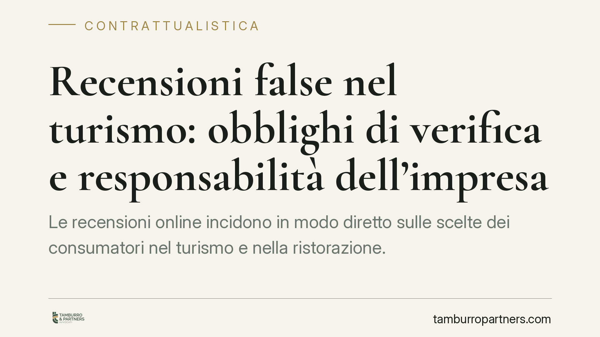

Recensioni false nel turismo: obblighi di verifica e responsabilità dell'impresa
Le recensioni online incidono in modo diretto sulle scelte dei consumatori nel turismo e nella ristorazione. Il quadro normativo vigente, già rafforzato dal recepimento della Direttiva Omnibus, impone obblighi di verifica dell'autenticità e colpisce le pratiche ingannevoli. Per le imprese cambia la gestione dei fornitori e dei contratti con le piattaforme, perché la responsabilità verso il consumatore non si trasferisce con l'esternalizzazione.

Il fatto
Le recensioni dei clienti sono diventate un fattore competitivo decisivo nel turismo e nella ristorazione. Accanto a questo valore cresce il contenzioso sulle recensioni manipolate: profili falsi, giudizi incentivati non dichiarati, campagne organizzate di gonfiaggio o denigrazione. L'AGCM (Autorità Garante della Concorrenza e del Mercato) interviene con sempre maggiore frequenza, e il tema tocca direttamente la contrattualistica con fornitori di marketing e piattaforme come Trustpilot.
Inquadramento normativo
La fonte oggi vigente e più pertinente è il Codice del Consumo (D.Lgs. 206/2005), così come modificato dal D.Lgs. 26/2023, che ha recepito la Direttiva UE 2019/2161 (cd. Direttiva Omnibus).
La riforma ha inserito obblighi specifici proprio sulle recensioni. In particolare, è ora pratica commerciale scorretta affermare che una recensione proviene da consumatori che hanno effettivamente utilizzato il prodotto o il servizio senza adottare misure ragionevoli e proporzionate per verificarlo. È inoltre vietato presentare recensioni false o incaricarne altri di redigerle, nonché falsare le recensioni per promuovere i propri prodotti (cfr. le fattispecie aggiunte all'allegato I del Codice del Consumo).
Sul piano sistematico, la disciplina si inserisce negli artt. 20-23 D.Lgs. 206/2005, che vietano le pratiche commerciali ingannevoli. La condotta può rilevare come inganno per azione (pubblicare o commissionare giudizi non veri) oppure per omissione (non dichiarare che una recensione è stata incentivata, o omettere i criteri con cui le recensioni vengono selezionate e ordinate). La competenza accertativa e sanzionatoria spetta all'AGCM.
Le distinzioni che contano
Non tutte le recensioni problematiche sono uguali, e la qualificazione giuridica cambia.
- Recensione falsa: giudizio relativo a un'esperienza mai avvenuta, o profilo inesistente. È la fattispecie più grave e di norma rientra nelle pratiche vietate in ogni caso.
- Recensione incentivata non trasparente: un giudizio reale ottenuto in cambio di sconti, omaggi o compensi, senza che l'incentivo sia dichiarato. Qui il problema è la mancata trasparenza, non la veridicità del contenuto.
- Astroturfing: campagne organizzate che simulano un consenso spontaneo (o una denigrazione diffusa del concorrente). Rileva come inganno per azione e, a seconda dei casi, come condotta anticoncorrenziale.
La linea di confine pratica è la trasparenza verso il consumatore e la tracciabilità del dato: chi gestisce recensioni deve poter dimostrare le misure adottate per verificarne l'autenticità.
Implicazioni pratiche per l'impresa
Il punto più delicato riguarda l'esternalizzazione. Molte strutture affidano la gestione della reputazione online ad agenzie o software di terze parti. Ciò non attenua la responsabilità: il professionista risponde verso il consumatore della scorrettezza della pratica anche quando l'attività è materialmente svolta da un fornitore. In altri termini, la responsabilità non si trasferisce con il contratto di servizio.
Di conseguenza, i contratti con fornitori e piattaforme vanno riletti alla luce degli obblighi del Codice del Consumo. Una clausola che si limiti a scaricare ogni rischio sul fornitore non è opponibile al consumatore e, nei rapporti interni, rischia di essere inefficace se non accompagnata da obblighi concreti di verifica e rendicontazione.
Cosa fare in concreto
- Mappate i fornitori che raccolgono, pubblicano o gestiscono recensioni, e identificate chi tratta dati personali dei recensori.
- Inserite nei contratti clausole specifiche che impongano al fornitore le misure di verifica dell'autenticità richieste dal Codice del Consumo post-Omnibus, con obbligo di conservare le prove dei controlli.
- Rendete trasparenti gli incentivi: se offrite sconti o omaggi in cambio di recensioni, dichiaratelo in modo chiaro e verificabile.
- Nominate un responsabile del trattamento ex art. 28 GDPR quando il fornitore tratta dati dei clienti, con istruzioni documentate.
- Documentate le procedure interne di raccolta, moderazione e rimozione, così da poter dimostrare all'AGCM la diligenza adottata.
Sviluppi attesi
Si segnala che è in discussione un intervento nell'ambito della legge annuale sulle PMI, con possibili obblighi ulteriori di verifica e tracciabilità delle recensioni nel turismo. Alla data di redazione il riferimento (indicato da alcune fonti come L. 34/2026) non risulta verificabile in Gazzetta Ufficiale: consigliamo di attendere la pubblicazione del testo definitivo prima di adeguare le procedure a tale fonte, mantenendo nel frattempo la conformità al quadro già vigente.
Contributo informativo a cura di Tamburro & Partners Avvocati - Avv. Giuseppe Tamburro. Non costituisce parere legale.
Ogni contratto ha il suo equilibrio.
Se vuoi una revisione delle clausole o una redazione su misura, scrivi allo studio. Ti rispondiamo entro un giorno lavorativo.